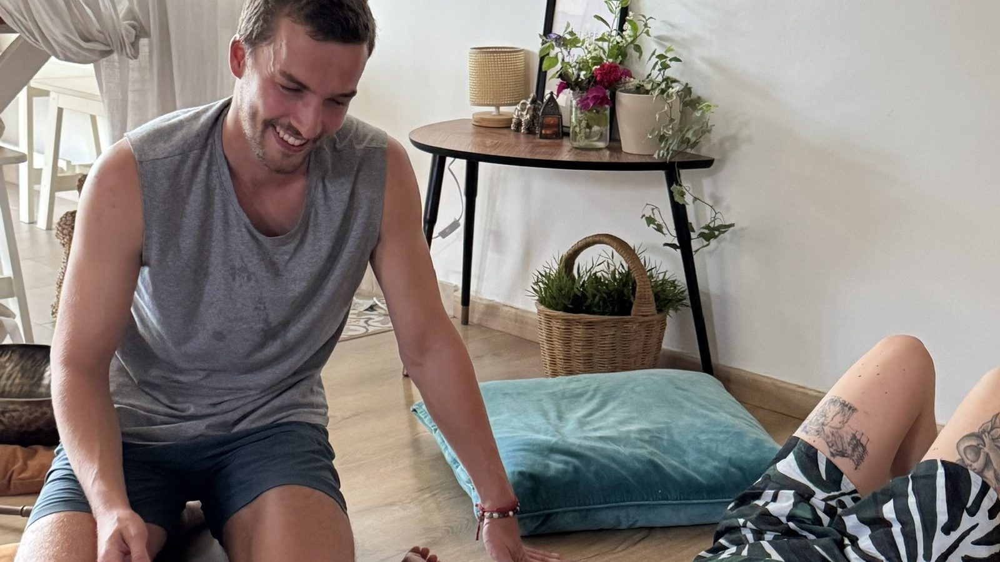

About Justus
Breathwork practitioner, yoga teacher, and the person behind Following Breath.
Instagram · TikTok · RedNote: FollowingBreath

What a Session With Me Feels Like
We usually start by talking for a few minutes about what's going on for you that day, then ease into the breath itself, at a pace that follows you rather than a script. Most people land somewhere between calm and wide awake, sometimes with feelings that surface along the way. I stay close the whole time, adjusting as we go, and there's always time afterward to just rest before you head back into your day.
If it helps, I'll bring in a bit of aroma, sound, or light bodywork too, only ever with your comfort leading the way.

What People Say
"I had my first ever Rebirthing Breathwork session with Justus and it was really transformative. He made me feel completely safe and held throughout and is so intuitive in the way he approaches sessions, knowing when to offer guidance and when to let it flow, and it created a really profound experience for me. Even the care taken before and after the session was carefully considered and I would absolutely trust Justus and recommend sessions with him."
There's also a 5-part series of video testimonials from past participants on Instagram.
Watch on InstagramMy Approach
Over time this has grown into a fairly broad toolkit: connected breathing, rebirthing breathwork, pranayama, yoga, and meditation, plus training in Thai yoga bodywork, reflexology, moxa, and singing bowl sound healing. I'm a certified breathwork practitioner and 500-hour yoga teacher, and I bring in whichever of these actually fits what you need, rather than running one fixed method.
I've taught across many countries and several continents, in settings ranging from simple community spaces to high-end resorts. Most sessions now run online, so wherever you are, you can join. The one exception is Rebirthing Breathwork, from a single session through the full Transformation Series, which is held in person only, at locations depending on where I'm currently based or traveling.
Corporate & Group Work
Alongside individual sessions, I've brought breathwork and yoga into team offsites, retreats, and wellness programs across that same range of places and settings, in both English and German. If you're looking to bring this into your own team or group, get in touch and we'll figure out what fits.
Want to work together?
Get in touch, or go straight ahead and book a time that suits you.
Book a Session